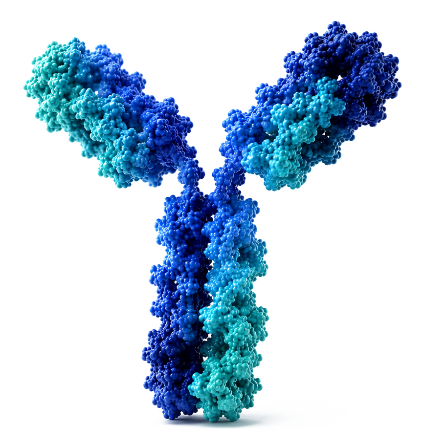

Clinical Advancement
We are advancing a focused portfolio of already-discovered antibody leads toward the clinic, with rigorous scientific planning and a small number of core programs as our primary strategic focus.
Antibody Platform. Discovery. Design.
Sapia Bio is focused on advancing a portfolio of biologics, developing AI-enabled approaches for faster, more precise antibody design, and collaborating with partners to accelerate discovery and development.

About Us
Sapia Bio is being built around three complementary priorities: the development of a portfolio of antibody candidates against diverse targets, the creation of partner-ready discovery capabilities, and the application of advanced computational methods to accelerate antibody design.
Our intent is to build practical, high-value capabilities that support both internal program advancement and external collaboration across the antibody discovery ecosystem.
Portfolio
Our capabilities are powered by complementary computational and high-throughput antibody screening platforms, giving us both the predictive design tools and the experimental scale to move candidates forward quickly.
We are advancing a focused portfolio of already-discovered antibody leads toward the clinic, with rigorous scientific planning and a small number of core programs as our primary strategic focus.
Our discovery engine combines AI-driven design and optimization with computational and high-throughput experimental screening, enabling faster, more precise identification of antibody candidates.
We partner with biotech and pharma collaborators, leveraging our discovery platforms and capabilities to support and accelerate external antibody programs.
Team
Chief Scientific Officer
Chief Scientific Officer
Dr. Georgiev leads translational strategy and the scientific design of clinical development programs. He is Director of the Vanderbilt Center for Computational Microbiology and Immunology and Professor of Pathology, Microbiology & Immunology and Computer Science at Vanderbilt, where his research focuses on antibody discovery and immunotherapy. He holds multiple patents, including antigen IP underlying an FDA-approved vaccine, and has extensive experience translating computational and immunological discoveries into therapeutic applications.
Chief Executive Officer
Chief Executive Officer
As CEO, Dr. Wasdin leads Sapia's overall strategy, operations, and business development. He is a Data Scientist at Vanderbilt University Medical Center and an inventor of the MAGE technology for AI antibody design, with expertise in machine learning and B cell immunology.
Contact
Get in touch with us to learn more about our portfolio, capabilities, and partnership opportunities.